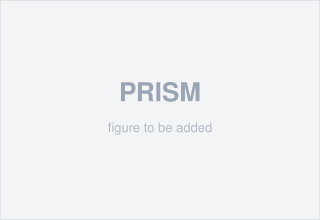

Ismail R. Mohamed (إسماعيل محمد)
I am a PhD student in Electrical and Computer Engineering at The University of Texas at Dallas, where I am a research assistant in the EACAS Lab, advised by Prof. Mohamed Ibrahim. I received my BSc in Electronics and Communication Engineering from the American University in Cairo (2025).
I work on hardware–software co-design for trustworthy embodied AI, with a focus on (1) world-model reliability, (2) AI hardware and HW–SW co-design, and (3) digital twins for scientific frameworks. My goal is to make learning-based perception and control reliable enough for safety-critical robotic systems.
Research Interests
My research is guided by a single thesis — co-designing hardware and software so that embodied AI systems can be trusted in the real world. I work on three connected themes:
- World-model reliability
- AI hardware / HW–SW co-design
- Digital twins for scientific frameworks
News
- [Jul 2026] Paper PRISM: Few-Shot Runtime Integrity Monitoring of Learned Perception via Corruption Subspace Families accepted to ICCAD 2026.
- [Jan 2026] Paper ENACT: Ensemble Neural Fields for Reactive Robot Control accepted to DAC 2026.
- [Aug 2025] Started my PhD at UT Dallas and joined the EACAS Lab.
Selected Publications

PRISM is a lightweight runtime monitor that detects when a foundation model's learned perception silently degrades under sensory corruption. By showing that diverse corruptions concentrate into a small set of subspace “families,” it trains a few-shot integrity scorer that generalizes to unseen corruptions at sub-millisecond overhead across safety-critical streaming domains.
Education
- BSc, Electronics and Communication Engineering, The American University in Cairo 2025